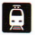

<html>
	<head>
		<title>OpenMetro - m5</title>
		<meta charset="utf-8">
		<style>
			body {font-family: Georgia;}
			.record {width: 160px;}
			#mappa {height: 100%;}
			#stationTable td {border-bottom: thin solid black;}
			#svgMap {width: 100%; margin: 0 auto; height: 260px;}
			#textualBox {margin-left: 133px; width: 300px; height: 300px;float: left;}
			#pictureBox {width: 600px; height: 300px; float: left;}
		</style>
	</head>
	<body>
		<div id="svgMap">
			<svg id="m5" width="1000" height="400"></svg>
		</div>
		<div id="textualBox">
			<table id="stationTable">
				<tbody>
			  <!-- row snippet coming from template #stationData goes here -->
			 </tbody>
			</table>
		</div>
		<div id="pictureBox"></div>

		<template id="stationData">
		  <tr>
			  <td class="record"></td>
			  <td></td>
		  </tr>
		</template>
		<template id="stationMap">
			
		</template>
		<script src="js/snap.svg.js"></script>
		<script src="js/csv.js"></script>
		<script>
			var paper = Snap("#m5");
			function loadMap () {
				var data = '\
					id,"name","xcoord","ycoord","since","color","accessible","atmpoint","regionalrailways","nationalrailways"\r\n\
					"m5_0","Bignami","45.526389","9.211944","2013-02-10","#a293bd","true","false","false","false"\r\n\
					"m5_1","Ponale","45.521944","9.209167","2013-02-10","#a293bd","true","false","false","false"\r\n\
					"m5_2","Bicocca","45.514722","9.205278","2013-02-10","#a293bd","true","false","false","false"\r\n\
					"m5_3",Ca\' Granda,"45.507222","9.201111","2013-02-10","#a293bd","true","false","false","false"\r\n\
					"m5_4","Istria","45.501667","9.197778","2013-02-10","#a293bd","true","false","false","false"\r\n\
					"m5_5","Marche","45.496389","9.195278","2013-02-10","#a293bd","true","false","false","false"\r\n\
					"m5_6","Zara","45.4926624575849","9.19270292116584","2013-02-10","#fbc02d","true","false","false","false"\r\n\
					"m5_7","Isola","45.487222","9.191111","2014-03-01","#a293bd","true","false","false","false"\r\n\
					"m5_8","Garibaldi FS","45.4842832621524","9.18889572165078","2014-03-01","#0c6510","true","true","true","true"';
				var stations = new CSV(data, { header: true }).parse();
				var stationGui = {xCoord: 960, yCoord: 180, radius: 18, pathM: 965, pathV: 130, coefficient: -50};
				var connectGui = {x1: 936, y1: 180, x2: 884, y2: 180};
				var currStation = null;

				displayLine(stations, stationGui, connectGui);
			}
			/*
			 * It builds a GUI representation of a single line by invoking both
			 * createStationGUI() and addConnection() functions.
			 */ 
			function displayLine(stations, stationGui, connectGui) {
				var shiftConnectionBy = 100;
				for (var i = 0; i < stations.length; i++) {
					currStation = stations[i];
					if (currStation.color == "#a293bd" || i == stations.length - 1) {
						createStationGUI(currStation, stationGui);	
					}
					stationGui.pathM = stationGui.pathM - shiftConnectionBy;
					stationGui.xCoord = stationGui.xCoord - shiftConnectionBy;
					if (i == 0) {
						addConnection(0, connectGui);
						console.log("building connection between " + stations[i].name + " and " + stations[i+1].name);
					} else if (i == stations.length - 1) {
						return;
					} else {
						console.log("building connection between " + stations[i].name + " and " + stations[i+1].name);
						addConnection(shiftConnectionBy, connectGui);
					}
					if (currStation.color != "#a293bd" && i < stations.length) {
						stationGui.pathM = stationGui.pathM + shiftConnectionBy;
						stationGui.xCoord = stationGui.xCoord + shiftConnectionBy;
						createStationGUI(currStation, stationGui);	
						stationGui.pathM = stationGui.pathM - shiftConnectionBy;
						stationGui.xCoord = stationGui.xCoord - shiftConnectionBy;
					}
				}
			}
			/*
			 * createStationGUI: It creates the circle (visual element) representing a station of the line. 
			 */
			function createStationGUI (stationObj, sGui) {
				console.log("building " + stationObj.name);
				var name = paper.text(50, 50, stationObj.name); // not sure about 50,50
				var pathCoords = "M" + sGui.pathM + "," + sGui.pathV + "V" + sGui.coefficient;
				var path = paper.path(pathCoords);
				var stationCircle = paper.circle(sGui.xCoord, sGui.yCoord, sGui.radius);
				name.attr({
					"font-size": "14px",
					"font-family": "Arial",
					textpath: path
				});
				stationCircle.attr({
					fill: "#fff",
					stroke:  stationObj.color,
					strokeWidth: 14,
					id: stationObj.id
				});
				stationCircle.hover (function () {
					console.log("Clicked on: " + stationObj.name);
					console.log("x: " + sGui.xCoord + ", y: " + sGui.yCoord + ", r: " + sGui.radius);
					stationCircle.animate({r: 30}, 700, mina.easeout);
					}, function () {
						stationCircle.animate({r: 18}, 700, mina.easein);
				});
				stationCircle.click( function () {
					var stationTable = document.getElementById("stationTable")
					var rowCount = stationTable.rows.length;
	        for(var j=0; j<rowCount; j++) {
						stationTable.deleteRow(j);
	          rowCount--;
	          j--;
	        }
					var template = document.querySelector("#stationData");
					var cells = template.content.querySelectorAll("td");
					// "Station name" row
					cells[0].textContent = "Stazione";
	  			cells[1].textContent = stationObj.name;
					// Clone the new row and insert it into the table
	  			var tb = document.getElementsByTagName("tbody");
	  			var stationName = document.importNode(template.content, true);
	  			tb[0].appendChild(stationName);
					// "Open since" row
					cells[0].textContent = "Inaugurata il";
	  			cells[1].textContent = stationObj.since;
					// Clone the new row and insert it into the table
	  			var stationSince = document.importNode(template.content, true);
	  			tb[0].appendChild(stationSince);
					// "Services" row
					cells[0].textContent = "Servizi";
					cells[1].innerHTML = (stationObj.accessible) ? "<br>" : "";
					cells[1].innerHTML += (stationObj.atmpoint) ? "<br>" : "";
					cells[1].innerHTML += (stationObj.regionalrailways) ? "<br>" : "";
	  			cells[1].innerHTML += (stationObj.nationalrailways) ? "<br>" : "";
					// Clone the new row and insert it into the table
	  			var services = document.importNode(template.content, true);
					tb[0].appendChild(services);

	  			if (document.getElementById("mapPicture") != null) {
	  				document.getElementById("mapPicture").parentNode.removeChild(document.getElementById("mapPicture"));
	  			}
	  			var url = "http://maps.googleapis.com/maps/api/staticmap?center=" + stationObj.xcoord+ "," + stationObj.ycoord + "&zoom=15&size=600x300&maptype=roadmap";
					var t = document.querySelector("#stationMap");
					// Populate the src at runtime.
					t.content.querySelector("img").src = url;
					var clone = document.importNode(t.content, true);
					document.getElementById("pictureBox").appendChild(clone);
				});
			}
		/*
		 * addConnection: It creates a segment (visual element) which connects two subsequent stations.
		 */
			function addConnection (shiftBy, connectGui) {
				var connection = null;
				if (shiftBy > 0) {
					connectGui.x1 = connectGui.x1 - shiftBy;
					connectGui.x2 = connectGui.x2 - shiftBy;
				}
				connection = paper.line(connectGui.x1, connectGui.y1, connectGui.x2, connectGui.y2);
				connection.attr({
					fill: "#a293bd",
					stroke: "#a293bd",
					strokeWidth: 16
				});
			}
			window.onload = loadMap;
		</script>
	</body>
</html>